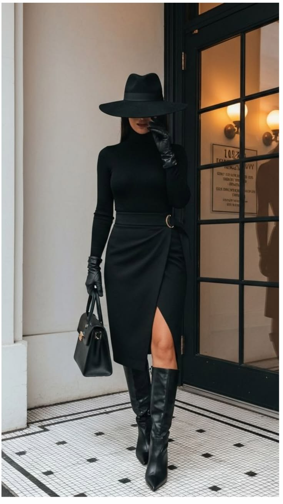
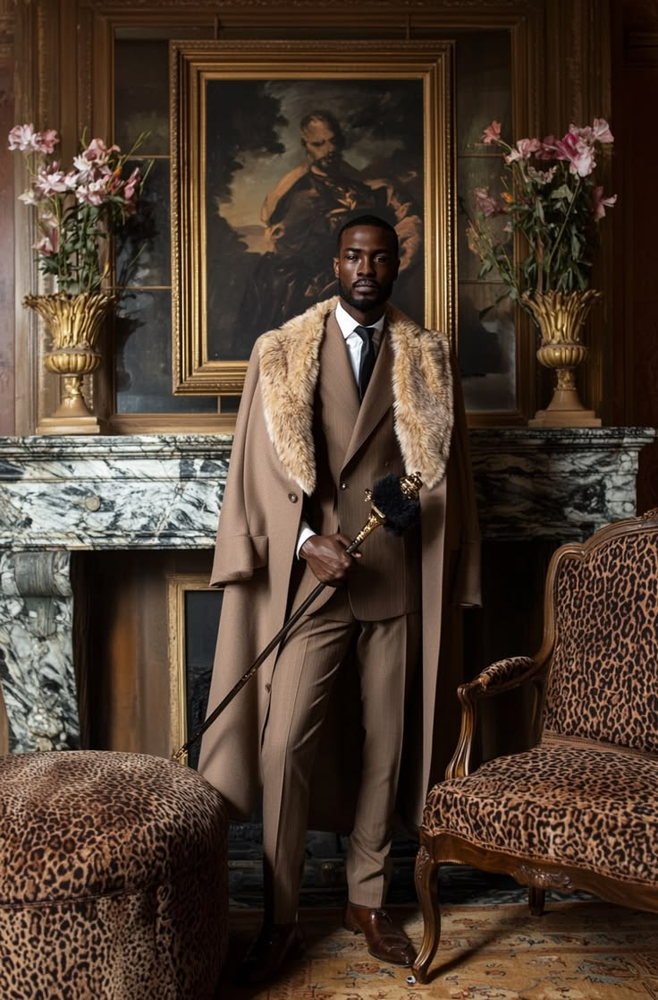
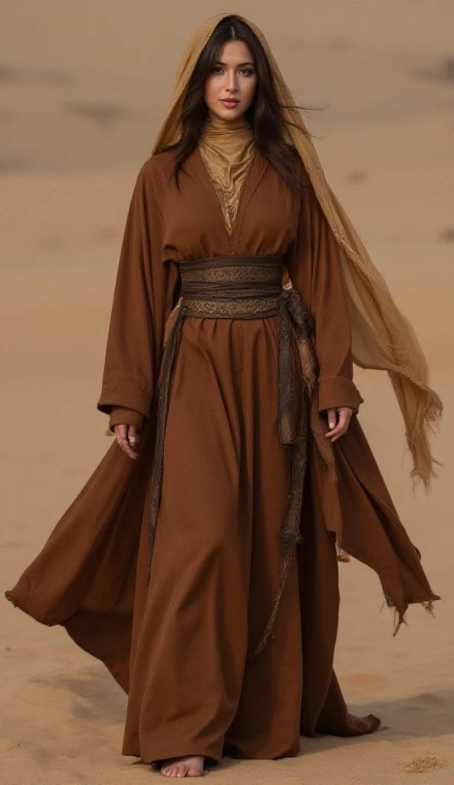
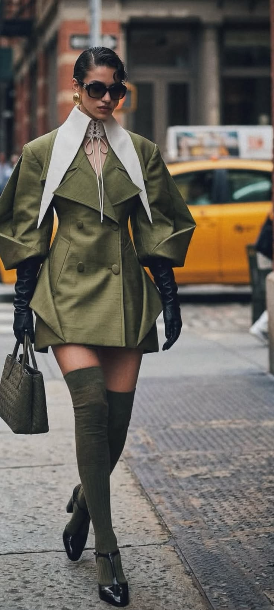

. Clothes do more than keep us warm; they act as a silent language that communicates our identity, beliefs, and social changes long before we speak.
Fashion is not just about clothing; it is a reflection of the times we live in. From the flapper dresses of the 1920s to the grunge style of the 1990s, each era tells a story through its fashion choices.
The trend of fashion on both men and women


Fashion trends are not limited to one gender; they influence both men and women.
Fashion evolved over time from this

to this

Fashion has evolved significantly over time, reflecting changes in society, technology, and cultural values.
From tailored silhouettes and bold streetwear to sustainable and gender-fluid styling, fashion today is shaped by culture, media, global trends, and personal identity. What people wear is influenced by music, celebrities, social platforms, and shifting social values, making fashion a living reflection of the times we live in.